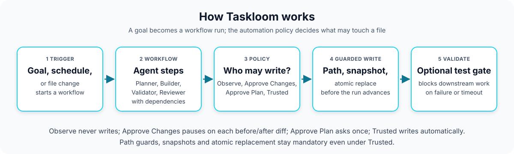

Portfolio project: desktop app + policy-gated agent workflows
Taskloom
A local-first visual control plane for teams of AI agents
A desktop app (Tauri 2 + Rust shell, React and TypeScript UI, a long-running Python engine) for building reusable agent teams and dependency-aware workflows. Each workflow carries one of four automation policies (Observe, Approve Changes, Approve Plan, Trusted) that decides whether generated output may become a file write. Every authorized write is path-checked, snapshotted and atomically replaced, and runs, approvals and history survive restarts in SQLite. Taskloom is "the visual policy and orchestration layer above" coding agents, not another model.
See what is measuredView the repoWhat is not built
- 114 automated tests: 77 Python/MCP + 37 React
- CI: last run on main passed when checked
- Release v0.12.0
- Model output is simulated in the tests
- Not signed or notarized
- Needs Python 3 and Ollama installed

01
The problem
Local coding agents are powerful, but their safest workflows still assume that the user is comfortable with command-line tools, configuration files, repository layouts, and raw diffs.
Taskloom moves those controls into a desktop automation studio. The question it was built to practise on is the trust boundary between agent output and the humans who have to answer for it: "the agent did something" is not an acceptable answer to anyone accountable for it.
Output that writes itself
Generated responses are treated as untrusted artifacts. Filesystem mutation requires either explicit approval or a workflow the user deliberately marked Trusted.
No way back
Every authorized write creates a snapshot first. Restores are confirmed twice, hash-verified, rejected if the file changed since the preview, and recorded in an auditable timeline.
State that vanishes on restart
SQLite restores agents, workflows, runs, steps, tasks and approvals. Active steps recover to a resumable queued state, and file and plan approvals survive restarts.
02
How it works
A user, a schedule or a file change starts a workflow. Agents hand durable outputs to each other. The workflow's policy decides whether a proposed change is only reported, reviewed, approved once as a plan, or applied automatically. Nothing is written without passing the path guard and a snapshot.

Swipe the diagram sideways to see all of it.
Stages of the diagram, one at a time
Stage 1 Trigger
A user selects or creates a workflow, supplies a goal, and chooses a workspace-relative target. Workflows can also start from an interval schedule or from a file or folder change.
Schedules and file watches run only while Taskloom is open.
Stage 2 Workflow
Taskloom resolves step dependencies and routes each step to its assigned agent (Planner, Builder, Validator, Reviewer). Agents exchange durable outputs while the engine limits local inference to one model job at a time.
Stage 3 Policy
The workflow's policy determines whether Taskloom observes, pauses per change, requests one plan approval, or applies trusted changes automatically.
Observe: report only, never write. Approve Changes: review each before/after diff. Approve Plan: approve once, then execute the guarded plan. Trusted: automatic snapshots and atomic writes.
Stage 4 Guarded write
Every authorized write is path-checked, snapshotted, and atomically replaced before the run advances. A rejected proposal is deleted and the original file is unchanged.
Stage 5 Validate
Validation steps can run an explicitly configured test command and block downstream work when it fails or times out. The command runs without a shell, from an executable allowlist, with bounded output.
The README states that automation policy reduces operational risk; it does not prove generated code is correct.
03
What is measured
The numbers below are the README's and CHANGELOG's own, copied verbatim. On 2026-10-06 the Python and React suites were also re-run on a fresh clone of the repository (77 and 37 tests, all passed).
As stated in the README ("The repository currently contains 114 automated tests: 77 Python/MCP tests and 37 React interaction tests") and the 0.12.0 changelog entry.
| Suite | Tests | Run by |
|---|---|---|
| Python/MCP (engine, MCP adapter, providers) | 77 | python -m pytest -q |
| React interactions (Vitest + React Testing Library) | 37 | npm test |
| Total | 114 | CI: engine job and frontend job |
Caveat These are counts of tests, not coverage: the README reports no coverage percentage. Model output in the engine tests comes from a fake model (FakeLLM) and the GitHub provider tests use a FakeGitHubProvider, so output quality from a real local model is not measured here.
CI runs three jobs on pushes and pull requests to main: React and TypeScript (npm test, npm run build), the Python engine (python -m pytest -q), and Tauri and Rust (cargo check --locked). The native job type-checks the Rust shell; it does not build or launch the desktop app.
Source: README.md (Testing and quality), CHANGELOG.md [0.12.0], .github/workflows/ci.yml
Each changelog release entry that states a total, using the changelog's own wording ("Expands" or "Increased automated coverage to N tests").
| Release | Tests | Changelog date |
|---|---|---|
| 0.3.0 | 35 | 2026-09-01 |
| 0.6.0 | 65 | 2026-09-01 |
| 0.7.0 | 84 | 2026-09-01 |
| 0.7.1 | 86 | 2026-09-01 |
| 0.7.2 | 87 | 2026-09-01 |
| 0.8.0 | 88 | 2026-09-01 |
| 0.8.1 | 89 | 2026-09-02 |
| 0.9.0 | 95 | 2026-09-02 |
| 0.10.0 | 103 | 2026-09-02 |
| 0.10.3 | 104 | 2026-09-02 |
| 0.11.0 | 110 | 2026-09-02 |
| 0.12.0 | 114 | 2026-09-02 |
Caveat Releases whose changelog entry states no total are left out (0.1.0, 0.2.0, 0.4.0, 0.5.0, 0.10.1, 0.10.2). The 0.3.0 entry says "35 tests across Python and React". The dates are the changelog's own, and a growing test count says nothing about how thorough the tests are.
Source: CHANGELOG.md
04
Architecture pattern
Pattern Policy at the mutation boundary: the model proposes content, a per-workflow policy decides, and a path guard, snapshot and atomic write sit between a decision and the filesystem.
The React application never writes agent output directly. It talks to a Python async engine over a JSONL bridge on stdin and stdout. The engine owns orchestration, policy, snapshots and SQLite state. The README calls the policy engine "the system's trust boundary".
- Automation Studio (React + TypeScript)inside a Tauri 2 desktop shell
- JSONL bridgestdin / stdout to the Python async engine
- Engine: scheduler and workflow runnerinterval schedules, file watches, dependency-aware steps, one model job at a time
- Model providerOllama local-first; OpenAI only when the user supplies credentials
- Automation policyObserve, Approve Changes, Approve Plan, Trusted; human decision where required
- Path guard, snapshot, atomic writethen the guarded validation command; failure stops the run and preserves output
- SQLite state, plus governed MCP adapter and GitHub syncdurable runs and approvals; external agents over MCP; Issues through the official gh CLI
05
Competencies demonstrated
Trust-boundary design
Four graduated autonomy policies; generated output is an untrusted artifact until a policy lets it through.
Recovery and audit
Pre-write snapshots, hash-verified confirmed restores, and an append-only execution history.
Cross-language systems
A language-neutral JSONL protocol between a React/Tauri interface and a long-running Python engine.
Durable state
Migration-safe SQLite tables; interrupted runs and approvals recover after restart.
Credential isolation
GitHub access goes through the authenticated official gh client; the token is never copied into SQLite.
Delivery discipline
Semantic-versioned releases with a changelog, and CI gates for Python, MCP, React, TypeScript and Rust.
06
What is not built or not verified yet
Taken from the repository's own README roadmap and limits, plus what was and was not checked for this page. Taskloom is the most mature project here, and this list is still not empty.
- not built
Bounded recursive subagent delegation
The roadmap lists it as unchecked and points to open issue #3, which is a written design proposal (agent-level ceilings, read-only synchronous children). It is an unbuilt proposal, not a feature.
- not built
Compiled Python sidecar
The MVP package requires Python 3 and Ollama on the destination machine; a compiled sidecar is planned.
- not built
Signed and notarized macOS releases
Local ad-hoc builds may require approval in System Settings. Public releases should use an Apple Developer ID and notarization; that is not done.
- not built
Other open roadmap items
Syntax-aware diffs with line-level navigation; custom structured validation rules beyond process exit status; GitHub and webhook triggers; Linear and Jira provider adapters; provider webhook signature verification, delivery ledger and reconciliation queue; parallel branches with configurable resource budgets; additional agent and provider adapters; multi-file transactions with all-or-nothing rollback.
- not verified
Desktop app build and a real model
CI runs
cargo checkon the Rust shell, not a full desktop build, and the tests use a fake model. The desktop packaging steps and the quality of real model output were not run or measured for this page. - limit
Policy is not correctness
Automation policy reduces operational risk; it does not prove generated code is correct. The README advises starting new workflows in Observe or Approve Changes mode.
- limit
Local-first means while it is open
Schedules, file watches and automatic GitHub reconciliation run only while the Taskloom desktop engine is open.
- limit
Agent controls are cooperative
A session advertises supported controls and polls between operations, so Taskloom never claims to terminate a process it does not own.
07
Roadmap
- DoneDependency-aware multi-agent workflows with Observe, Approve Changes, Approve Plan, and Trusted policies
- DoneDurable workflow and step-run history with restart recovery; serialized local inference and atomic guarded file writes
- DoneGuarded validation commands, durable interval schedules, and durable filesystem triggers
- DoneOfficial MCP v2 governed task, progress, trace, and cooperative-control tools
- DoneBidirectional GitHub Issues sync with automatic reconciliation, conflicts, health state, and durable retries
- DoneGuided onboarding, in-app settings, and local environment health checks
- DoneSnapshot browser with hash-verified, confirmed, and auditable one-click restoration
- Not doneBounded recursive subagent delegation (design proposal in open issue #3; nothing built)
- Not doneCompiled Python sidecar for zero-dependency installation
- Not doneSigned and notarized macOS releases
- Not doneGitHub and webhook triggers; Linear and Jira provider adapters
- Not doneMulti-file transactions with all-or-nothing rollback